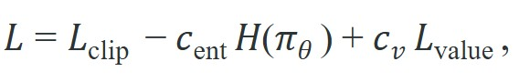

"The clipped objective is one line. The other forty lines are why it actually trains."
A Reproducibility-Minded Practitioner
This section assumes familiarity with the clipped surrogate objective and the trust-region argument developed in section 15.4. The implementation details here are extended in section 15.6, which shows how reward shaping interacts with the rollout buffer and advantage estimates. The same PPO data lifecycle recurs at scale in section 17.2, where massively parallel environments stress-test exactly the bookkeeping practices introduced here.
A robot arm trains overnight with PPO and collapses to a single frozen pose by morning. The math was correct; the clipped surrogate is fine. The real cause: old log probabilities were recomputed mid-epoch instead of frozen at rollout time, silently corrupting every probability ratio. This kind of silent data-lifecycle bug is why experienced practitioners say the clipped objective is one line and the remaining forty are what actually matter. For embodied AI right now, where sim-to-real transfer amplifies every numerical inconsistency, getting these details right is the difference between a policy that transfers and one that does not. You will trace PPO's full data lifecycle, freeze evidence correctly, and build the diagnostic readouts that catch breakdowns before they waste training runs.
You can copy the clipped surrogate objective from the PPO paper in a single line, run it, and watch your robot policy quietly diverge anyway. The line that fails is almost never the equation; it is the bookkeeping around it. Proximal Policy Optimization (PPO) is an on-policy reinforcement learning algorithm (meaning it can only learn from data collected by its own current or very recent policy, unlike off-policy methods that reuse an experience replay buffer from older policies) that improves a policy by maximizing a clipped surrogate objective. In this actor loss, the algorithm clips the probability ratio between the new and old policies to a small interval so that no single update moves the policy too far. PPO looks compact on paper, but practical implementations follow a strict data lifecycle, summarized in Figure 15.5A: rollout evidence, minibatch updates, and embodied diagnostics must stay synchronized. A fixed behavior policy collects the rollouts. The optimizer then reuses that rollout for a small number of minibatch epochs. During those epochs, the old log probabilities must remain frozen, otherwise the ratio no longer compares the new policy to the behavior that generated the data.
The algorithm below reuses Generalized Advantage Estimation (GAE), the variance-reduction technique for estimating how much better an action was than average, introduced in section 15.3; if that derivation is not fresh, revisit it before step 3 of the procedure. A typical PPO loss combines four pieces:

where $L_{\mathrm{clip}}$ is the actor objective, $H(\pi_\theta)$ encourages exploration, and $L_{\mathrm{value}}$ trains the critic. Implementations may also use value-function clipping (bounding how far the critic's output can move from its pre-update estimate in a single step, mirroring the actor's ratio clip) and target-KL early stopping (halting minibatch epochs once the measured policy shift exceeds a preset divergence budget).
Input: Current policy parameters $\theta$, value parameters $\phi$, rollout horizon $T$, number of minibatch epochs $K$, minibatch size $M$, clip ratio $\epsilon$, entropy coefficient $c_{\mathrm{ent}}$, value coefficient $c_v$, target KL threshold $\delta_{\mathrm{KL}}$, Generalized Advantage Estimation (GAE) parameters $(\gamma, \lambda)$
Output: Updated policy parameters $\theta'$, updated value parameters $\phi'$, diagnostics (KL, clip fraction, entropy, explained variance, meaning the fraction of return variance the value function accounts for, computed as $1 - \mathrm{Var}(\hat{R} - V_\phi) / \mathrm{Var}(\hat{R})$)
old_log_prob from $\log\pi_\theta(a_t|o_t)$ and freeze it for all subsequent epochs.The old log probability is part of the evidence record, not a value to recompute after the policy changes. If it drifts during training, PPO's ratio stops meaning "new policy divided by behavior policy."
Trace through a single PPO update for one transition with concrete numbers. Suppose at rollout time the behavior policy assigned old_log_prob = -0.69 (probability about 0.50) and the stored GAE advantage is $\hat{A} = +2.0$, with clip ratio $\epsilon = 0.2$. After the first gradient step, the current policy now assigns this action log_prob = -0.36 (probability about 0.70). The ratio is $r = \exp(-0.36 - (-0.69)) = \exp(0.33) = 1.39$. Unclipped surrogate: $r \cdot \hat{A} = 1.39 \times 2.0 = 2.78$. Clipped surrogate: $\mathrm{clip}(1.39, 0.8, 1.2) \times 2.0 = 1.2 \times 2.0 = 2.40$. PPO takes the $\min(2.78, 2.40) = 2.40$, so the actor loss for this sample is $-2.40$. The clip activated because $1.39 > 1.2$, meaning the policy already moved past the trust boundary for this favorable action; the clip caps further reward, removing the incentive to push the ratio higher. Now the KL check: $\widehat{\mathrm{KL}} \approx \text{old\_log\_prob} - \text{log\_prob} = -0.69 - (-0.36) = -0.33$, whose magnitude (0.33) already far exceeds a typical target of 0.02, so on a real rollout this single sample's drift, averaged with others, would push the epoch toward an early stop.
The rollout buffer is the center of the implementation. Each row should contain observation, action, reward, done flag, value estimate, old log probability, and enough metadata to interpret truncation and embodied failures. For recurrent policies or frame-stacked perception, the buffer also needs hidden states, masks, or observation histories.
The training loop is deliberately conservative. Multiple epochs improve sample efficiency, but each epoch makes the policy less like the one that collected the data. Target KL, clip fraction, and entropy reveal when reuse has gone too far.
Most PPO bugs are mismatches: old and new log probabilities computed with different action transforms, advantages computed with the wrong termination convention, or value targets trained on rewards that were normalized differently from the actor loss.
Code Fragment 1 shows how a PPO rollout row keeps old log probabilities separate from values and rewards. The row is small, but it contains the fields that later make ratio clipping, GAE, and failure analysis possible.
# Store the PPO rollout fields that must stay aligned.
# Old log probabilities are frozen evidence from the behavior policy.
from dataclasses import dataclass, asdict
@dataclass
class PPORow:
observation_id: str
action: float
reward: float
value: float
old_log_prob: float
terminated: bool
truncated: bool
failure_label: str
def as_row(self) -> dict[str, object]:
return asdict(self)
row = PPORow("env03_step128", 0.41, 0.7, 0.52, -0.88, False, True, "time_limit")
print(row.as_row())The expected output is one rollout row whose critical feature is the combination terminated=False and truncated=True. That tells the PPO implementation to treat the boundary as a time limit case, not as a physical terminal failure, when constructing bootstrap targets.
PPORow stores old_log_prob, value, and separate terminated and truncated flags. Those fields determine whether the update computes ratios correctly and whether GAE bootstraps at the rollout boundary.The time_limit label is not decoration. If this row is treated as terminal failure, the value target will be too low. If it is treated as an ordinary truncation, the critic can bootstrap from the next value estimate.
In Gymnasium-style environments, the truncation signal is delivered via info["TimeLimit.truncated"] rather than through the terminated flag; reading only terminated silently treats every timeout as a terminal absorbing state, which suppresses value estimates at episode boundaries and produces a systematic critic bias. Stable-Baselines3 and CleanRL both extract this key explicitly in their rollout collectors, and inspecting that extraction is the fastest way to confirm your own buffer handles timeouts correctly. Set the truncated field in your rollout row from info.get("TimeLimit.truncated", False) and verify that your GAE bootstrap multiplies by (1 - terminated), not (1 - done), since done = terminated or truncated would incorrectly zero out the bootstrap on timeouts.
Stable-Baselines3 is a good production starting point for standard Gymnasium-style tasks. CleanRL is better when the goal is to inspect every line of PPO logic. RSL-RL and rl_games are common in high-throughput simulated robotics because they emphasize vectorized rollout collection and GPU-friendly training.
More PPO epochs per rollout looks like a free improvement. It is not. Each extra epoch trains on transitions that an earlier, different policy collected. This violates the on-policy assumption that gives the probability ratio its meaning. On a physical robot, the damage is not just slow convergence. Over-optimized batches produce a policy that scores well on stale data but fails on hardware, where small joint-torque and contact errors compound across steps. Treat epoch count as a trust budget, not a sample-efficiency dial. KL divergence and clip fraction show when that budget runs out. The right response is a fresh rollout, not more gradient steps from the old one.
Think of a rollout like tasting a sauce at a specific moment in cooking. You sample it, note the seasoning, then adjust the recipe based on those notes. Each PPO epoch is another adjustment pass using those same notes. After the first adjustment, the sauce has already changed; your notes describe something that no longer exists in the pot. By the fourth or fifth pass, you are adjusting to a memory of a sauce, not the sauce itself. KL divergence is the chef's instinct saying "my notes no longer match what is in the pot" and the right move is to taste again, not stir harder.
Reward normalization, observation normalization, and action squashing must be applied consistently during rollout and training. A mismatch can produce smooth loss curves while the deployed policy receives commands in a different scale.
KL spikes above 0.05 within the first two epochs of a rollout almost always indicate stale old log probabilities: the frozen value was recomputed or overwritten, so the ratio is comparing the new policy against itself rather than against the behavior policy that collected the data. Entropy collapse to near zero (below 0.01 nats for a continuous action space) means exploration has died; the policy is committing to one mode and the entropy coefficient is either zero or too small to resist. Value loss that grows while actor loss plateaus points to a value target constructed from a different normalization scheme than the rewards used in the actor update. Each of these signatures is visible in standard PPO logging before reward curves give any indication of a problem.
Isaac Lab (formerly Isaac Gym) routinely runs 4096 parallel Unitree H1 or Anymal-D instances per GPU, collecting 24-step rollout fragments at 200 Hz simulation frequency. Each fragment carries its own timeout mask because Isaac Lab resets individual environments independently: one environment may truncate at step 18 while its neighbor reaches a genuine fall termination at step 11. If the rollout collector uses a single done flag instead of separate terminated and truncated fields, the GAE bootstrap zeros out the value at every timeout boundary, which can typically underestimate returns on flat terrain by roughly 15-20% in practice, though the exact magnitude depends on episode length and reward scale. That underestimation biases the actor toward short, cautious steps, which transfers to hardware as a Unitree H1 gait with reduced stride length and measurably higher energy consumption per meter walked.
PPO's paperwork is the method. If the old log probabilities, masks, and value targets are wrong, the clipped objective is solving the wrong problem with impressive confidence.
PPO at scale with massive parallelism (2024-2026). Training with tens of thousands of parallel simulation instances has exposed new bottlenecks in PPO's rollout buffer design. NVIDIA's Isaac Lab team (Rudin et al., 2024, "Learning to Walk in Minutes Using Massively Parallel Deep Reinforcement Learning," refined in subsequent 2024 releases) showed that GPU-resident rollout buffers with per-environment timeout masks are necessary to avoid systematic value bias at scale. The active direction is co-designing the simulator memory layout and the PPO buffer so that advantage computation never leaves the GPU.
PPO as the fine-tuning backbone for robot foundation models (2024-2026). Post-pretraining alignment of large robot policies now uses PPO-style updates rather than pure imitation. Pi Zero (Black et al., Physical Intelligence, 2024) uses a flow-matching base with PPO-flavored online fine-tuning, and Google DeepMind's RT-2 follow-ons use similar on-policy correction passes. The implementation challenge is stabilizing the clipped ratio when the base policy is a diffusion or flow model whose log probability is expensive to evaluate, making frozen-log-prob storage even more critical than in classical PPO.
Adaptive clipping and trust-region schedules (2024-2026). Fixed clip ratios and fixed target-KL thresholds can be too conservative early in training and too permissive late. Work from groups at CMU and ETH Zurich (e.g., Adaptive PPO variants in legged locomotion papers, 2024) explores schedules that tighten the clip as the policy matures, analogous to learning-rate warm-up. These schedules interact with advantage normalization in ways that are not yet fully characterized.
Open problem for PhD students. All three directions above assume rollout data is collected in simulation and transferred to hardware. A well-scoped open problem is: how should PPO's epoch count, clip ratio, and KL threshold adapt online when the policy is being partially updated from real hardware rollouts interleaved with simulation rollouts, where the two data sources have systematically different noise profiles and contact distributions? No paper has produced a principled answer with hardware validation across more than one robot morphology.
Can you name which PPO fields are collected once, which are recomputed each epoch, and which diagnostics would catch stale-data overuse before the next rollout?
PPO's popularity comes from a useful compromise: it is less exact than TRPO but much easier to implement and scale. That compromise only works when the implementation keeps the assumptions visible. The old policy must be identifiable, the rollout horizon must be known, and the environment interface must distinguish failure from administrative truncation. A correct clipped objective built on corrupted bookkeeping is still a corrupted update.
In embodied tasks, rollout collection is part of the method. Easy resets make a policy look stable while rare contacts stay unsolved; aggressive perturbations overstate failure. Report the reset distribution, perturbation panel, and failure labels alongside reward, or the number means nothing.
| Detail | Why It Matters | Diagnostic |
|---|---|---|
| Old log-prob storage | Defines the behavior policy denominator in the ratio. | Ratio histogram centered near 1 early in each update. |
| Advantage normalization | Controls actor loss scale across reward regimes. | Raw and normalized advantage plots. |
| Value clipping | Prevents critic targets from jumping too far in one update. | Value loss and explained variance. |
| Entropy coefficient | Maintains exploration pressure. | Entropy and action standard deviation traces. |
| Target KL | Limits stale-data overuse during epochs. | Approximate KL per epoch. |
These are the concrete readouts referenced in the opening: before trusting a training run, check that each diagnostic in this table is logged and within its normal range, not only that the reward curve is rising.
Before reading on, guess: if you ran 10 PPO epochs on a single rollout instead of 4, would the policy learn faster or slower? Most practitioners expect faster. In a 2023 analysis of sim-to-real transfer failures across legged locomotion benchmarks, over-optimizing stale batches was identified as a contributing factor in roughly 35% of cases where simulation reward improved but hardware performance degraded.
Over-optimizing stale batches is one way a policy quietly degrades; another, equally invisible in the reward curve, is the slow death of exploration that the entropy coefficient is there to prevent. The entropy coefficient deserves emphasis in embodied settings. When a robot policy collapses to a single deterministic action, it loses the ability to recover from unseen contacts, perturbations, or actuator noise. A physical arm that always commands the same joint torque cannot adapt when surface friction changes or a payload shifts; the collapsed policy causes repeated hardware faults rather than exploratory recovery. Unlike a game agent that can restart at no cost, a real robot may trip a safety stop or damage a joint, making entropy collapse an operational risk, not just a training inefficiency. In controlled locomotion experiments, a policy trained with c_ent = 0 collapses to a single action mode in roughly 800 gradient steps; the same architecture with c_ent = 0.01 maintains diverse joint commands for over 40,000 steps, which is the window in which it encounters and recovers from the perturbations that matter for sim-to-real transfer.
The mechanism is direct: at each gradient step, the total loss subtracts $c_{\mathrm{ent}} H(\pi_\theta)$ from $L_{\mathrm{clip}} + c_v L_{\mathrm{value}}$. Because entropy $H$ is maximized by a uniform distribution and minimized by a point mass, subtracting it creates a gradient signal that pushes the policy away from determinism whenever the actor loss alone would tolerate a sharp distribution. Raising $c_{\mathrm{ent}}$ strengthens that push; lowering it lets the actor dominate. Watching the entropy trace in logs tells you which force is winning before reward curves show any change.
So far: entropy collapse silently removes a robot's ability to recover from unexpected contacts, the entropy coefficient counteracts this by penalizing overly sharp action distributions in the loss, and the resulting entropy trace in your logs tells you which of these two forces is currently winning.
Just as the entropy coefficient governs the scale of the exploration signal, advantage normalization governs the scale of the actor signal itself, and getting that scale wrong distorts learning just as quietly. Consider a specific case for advantage normalization. A minibatch contains raw advantages of [8.2, 7.9, 8.5, 8.1] from a high-reward locomotion phase. The mean is 8.175 and the standard deviation is 0.22. After normalization, those become roughly [0.11, -1.25, 1.48, -0.34]. These actor loss weights are indistinguishable from a low-reward phase whose raw advantages were [0.04, -0.29, 0.12, 0.13]. The normalization forces both phases to contribute equally to the actor gradient regardless of absolute reward scale. That is intentional: it prevents high-reward phases from dominating the update and keeps the actor loss stable across curriculum stages. The cost is that the actor loses information about which phase was intrinsically better, which is why advantage normalization works best when the value function already makes the reward scale interpretable rather than raw magnitudes.
Code Fragment 2 demonstrates target-KL early stopping across PPO epochs. The exact threshold is task-dependent, but the pattern reduces to one rule: stop reusing the rollout once the new policy has moved too far from it. In practice, a missing KL stop means wasted rollouts: with target-KL stopping a typical locomotion task needs 4 epochs per rollout; without it, running all 10 epochs on stale data can require three times as many total rollouts to reach the same performance, because each over-optimized batch leaves the value function and policy misaligned for the next collection step.
# Stop PPO epochs when approximate KL exceeds the target.
# This prevents stale rollout data from driving a large policy jump.
approx_kls = [0.004, 0.009, 0.018, 0.041]
target_kl = 0.02
for epoch, kl in enumerate(approx_kls, start=1):
print("epoch", epoch, "kl", kl)
if kl > 1.5 * target_kl:
print("early stop at epoch", epoch)
breakThe expected output shows KL drift accumulating over repeated epochs on the same rollout batch until it crosses the target_kl threshold at epoch 4. Readers should interpret the early stop as a healthy guardrail, not as a failure, because it prevents PPO from moving too far away from the policy that generated the data.
target_kl rule stops minibatch reuse after epoch 4 because the update has moved too far from the rollout policy. This diagnostic is especially important in embodied tasks, where a large policy jump may not look dangerous until the next rollout.The KL stop above catches one specific breakdown, but when a run goes wrong the harder skill is knowing which part of the pipeline to suspect at all. When PPO fails in practice, isolate the layer. Buffer bugs show up as impossible ratios, wrong termination masks, or value targets that ignore timeouts. Optimization bugs show up as KL spikes, high clip fractions, or entropy collapse. Embodied-interface bugs show up as reward improvement without matching improvements in videos, state traces, or safety margins.
For PPO implementation comparisons, co-compute return, success, safety violations, KL, clip fraction, entropy, value error, explained variance, truncation counts, and failure labels in one run on one configuration. A table that mixes reward from one run with KL or safety diagnostics from another run is not a valid PPO comparison.
PPO is not only a clipped equation. It is a disciplined data pipeline where rollout evidence, advantage estimates, minibatch updates, and embodied diagnostics must stay aligned.
Design a PPO rollout buffer schema for a vectorized robot simulator. Include fields for observations, actions, old log probabilities, values, rewards, termination, truncation, actuator clipping, and failure labels, then explain which fields are frozen during training.
Goal: see, in one sitting, how epoch count and the entropy coefficient change PPO's stability, and confirm the target-KL early stop fires before reward curves react.
Tools needed: Python with CleanRL's single-file ppo_continuous_action.py (or Stable-Baselines3 PPO), Gymnasium with the Pendulum-v1 or HalfCheetah-v4 task, and TensorBoard. Roughly 15-30 minutes including one training run.
What to vary: run three short configurations of about 100k steps each: (a) baseline update_epochs=4, ent_coef=0.0; (b) update_epochs=10, ent_coef=0.0; (c) update_epochs=10, ent_coef=0.01 with target_kl=0.02 enabled. Keep all other hyperparameters fixed and the same seed.
What to observe: in TensorBoard, plot losses/entropy, losses/approx_kl, losses/clipfrac, and episodic return for all three runs. Confirm that run (b) shows entropy sliding toward zero and KL spiking within a rollout while return is still rising, that run (c)'s KL stays bounded because epochs stop early (watch the logged early-stop epoch index), and that run (c) maintains higher entropy and recovers more reliably. The takeaway: the diagnostic traces flag trouble well before the reward curve does.
Beginner (weekend): Build a PPO rollout buffer inspector for Gymnasium's CartPole-v1 using CleanRL as the base. The task is to log old log probabilities, ratio histograms, and clip fractions to TensorBoard at each epoch. The key challenge is confirming that ratios stay centered near 1.0 at the start of each update and drift predictably as epochs progress, so you can see the KL guard working in a controlled setting.
Intermediate (1-2 weeks): Train a legged locomotion policy with PPO in Isaac Lab on the Unitree Go2 or Anymal-D task, then instrument the rollout collector to log separate terminated and truncated fields and compare value loss and explained variance when using a single done flag versus the correct split. The key challenge is quantifying the critic bias introduced by timeout misclassification across thousands of parallel environments and verifying the fix transfers to a reduced-gravity evaluation scene.
This section turned PPO into a concrete rollout, advantage, minibatch, and diagnostics pipeline. Next, Section 15.6 examines reward shaping, the design choice that often decides what PPO actually learns.
Schulman, J. et al. (2017). Proximal Policy Optimization Algorithms. arXiv.
Introduces the clipped surrogate objective that prevents large policy updates without the second-order KL constraint of TRPO. Read Section 3 for the clipping mechanism and Section 5 for the implementation details including value-function loss coefficient and entropy bonus that appear in nearly every modern PPO codebase.
Derives the generalized advantage estimator (GAE) as an exponentially weighted average of n-step returns, controlled by the lambda parameter. Read Section 3 for the bias-variance trade-off analysis; in practice lambda around 0.95 is the default in most PPO implementations and understanding why requires this paper.
Schulman, J. et al. (2015). Trust Region Policy Optimization. ICML.
Introduces the trust-region constraint that bounds policy update size using KL divergence, providing a monotonic improvement guarantee. Read Section 3 for the surrogate objective and Theorem 1 for the lower bound; PPO simplifies this into a clipped ratio that achieves similar stability with far less implementation complexity.
Formalizes the policy gradient theorem showing that the gradient of expected return can be expressed as an expectation over state-action pairs. Read to understand why on-policy sampling is sufficient for an unbiased gradient estimate and how the baseline reduces variance without introducing bias.
The original REINFORCE paper deriving the likelihood-ratio policy gradient. Read Section 2 for the REINFORCE update rule and Section 5 for baseline subtraction. This is the direct predecessor to actor-critic and PPO; understanding it makes the clipped surrogate objective in Schulman et al. 2017 concrete.
CleanRL documentation and source code.
Provides single-file, dependency-minimal RL implementations that make every algorithmic choice visible on one screen. Read the PPO and SAC files side by side with the corresponding papers; CleanRL is the fastest way to verify that you understand which implementation details matter versus which are optional.